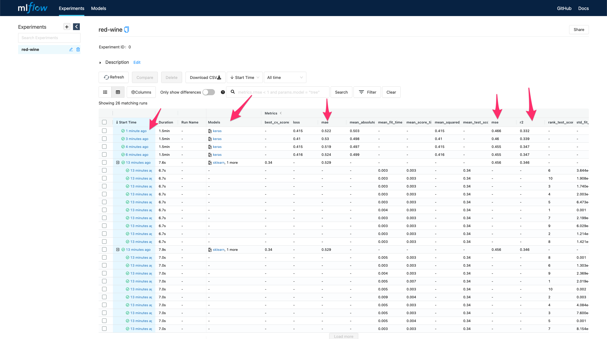
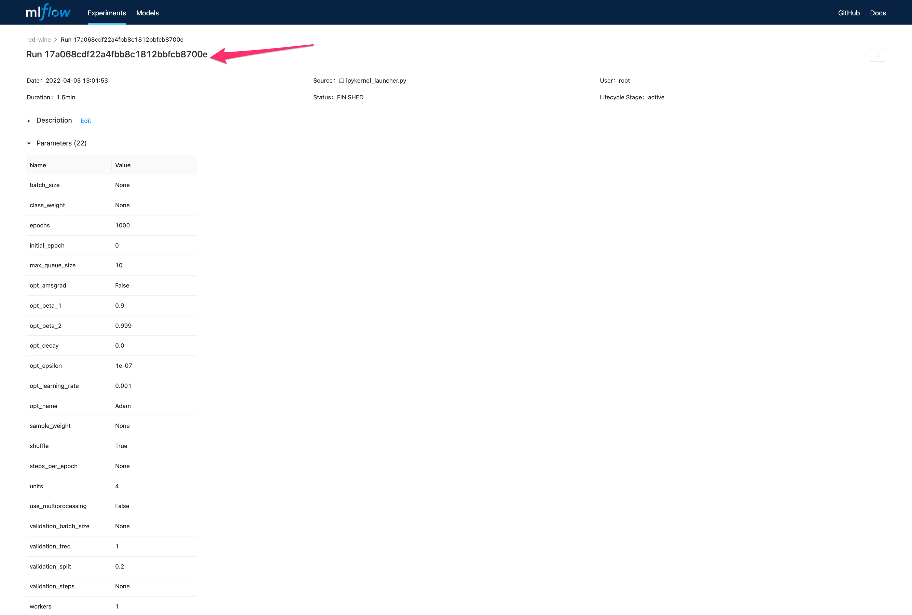
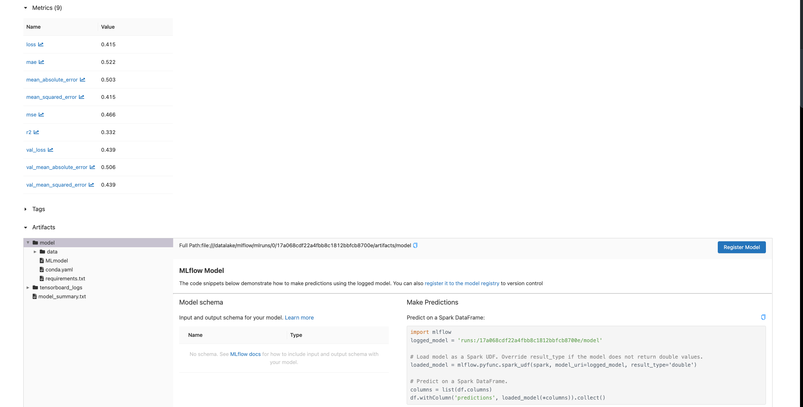
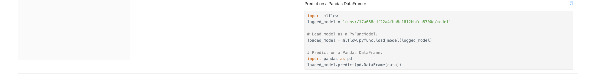

Tracking con TensorFlow usando el sistema local de archivos
Ultima modificación: Mayo 14, 2022
Código base
[1]:
def load_data():
import pandas as pd
url = "http://archive.ics.uci.edu/ml/machine-learning-databases/wine-quality/winequality-red.csv"
df = pd.read_csv(url, sep=";")
y = df["quality"]
x = df.copy()
x.pop("quality")
return x, y
def make_train_test_split(x, y):
#
# En TF la partición de los datos se realiza por fuera del ambienta. Esto
# es, los archivos ya se encuentran divididos en train y test. En este
# ejemplo se aprovecha sklearn para mantener la compatibilidad con los
# tutoriales anteriores.
#
from sklearn.model_selection import train_test_split
(x_train, x_test, y_train, y_test) = train_test_split(
x,
y,
test_size=0.25,
random_state=123456,
)
return x_train, x_test, y_train, y_test
def eval_metrics(y_true, y_pred):
#
# En este ejemplo se puede hacer con sklearn debido a que la muestra es
# pequeña y se desea hacer el ejemplo compatible con el resto de tutoriales
# de esta sección.
#
from sklearn.metrics import mean_absolute_error, mean_squared_error, r2_score
mse = mean_squared_error(y_true, y_pred)
mae = mean_absolute_error(y_true, y_pred)
r2 = r2_score(y_true, y_pred)
return mse, mae, r2
def report(estimator, mse, mae, r2):
print(estimator, ":", sep="")
print(f" MSE: {mse}")
print(f" MAE: {mae}")
print(f" R2: {r2}")
MLflow Tracking
[2]:
def make_experiment(experiment_name, units, verbose=0):
import os
os.environ["TF_CPP_MIN_LOG_LEVEL"] = "2"
import tensorflow as tf
import mlflow
import mlflow.sklearn
x, y = load_data()
x_train, x_test, y_train, y_test = make_train_test_split(x, y)
FEATURES = 11
#
# Establece el directorio de tracking. Esta es la dirección absoluta al
# directorio actual en este ejemplo.
#
if not os.path.exists("corridas"):
os.makedirs("corridas")
mlflow.set_tracking_uri("file:///workspace/mlflow/corridas")
print("Tracking directory:", mlflow.get_tracking_uri())
mlflow.tensorflow.autolog(
every_n_iter=1,
log_models=True,
disable=False,
exclusive=False,
disable_for_unsupported_versions=False,
silent=False,
registered_model_name=None,
)
#
# Almancena las corridas en el experimento indicado
#
mlflow.set_experiment(experiment_name)
with mlflow.start_run() as run:
run = mlflow.active_run()
print("Active run_id: {}".format(run.info.run_id))
model = tf.keras.Sequential(
[
tf.keras.layers.Dense(
units,
activation="relu",
input_shape=(FEATURES,),
),
tf.keras.layers.Dense(1),
]
)
mlflow.log_param("units", units)
model.compile(
optimizer=tf.keras.optimizers.Adam(),
loss="mean_squared_error",
metrics=[
"mean_squared_error",
"mean_absolute_error",
]
)
model.fit(
x_train,
y_train,
epochs=1000,
verbose=verbose,
validation_split=0.2,
)
results = model.evaluate(
x_test,
y_test,
verbose=verbose,
)
y_pred = model.predict(x_test)
mse, mae, r2 = eval_metrics(y_test, y_pred=y_pred)
mlflow.log_metric("mse", mse)
mlflow.log_metric("mae", mae)
mlflow.log_metric("r2", r2)
#
# Reporta el mejor modelo encontrado en la corrida
#
y_pred = model.predict(x_test)
mse, mae, r2 = eval_metrics(y_test, y_pred=y_pred)
if verbose > 0:
report(model, mse, mae, r2)
[3]:
import numpy as np
#
# Se tantea para diferentes cantidades de neuronas en la capa oculta. Por
# simplicidad no se varian otros parámetros como la tasa de aprendizaje o su
# esquema de modificación
#
for units in range(1, 5):
print(f"Runing for H={units} ...")
make_experiment(
units=units,
experiment_name="red-wine",
verbose=0,
)
print()
Runing for H=1 ...
Tracking directory: file:///workspace/mlflow/corridas
Active run_id: 34b2b453890a40c39469aad2c4f1c155
INFO:tensorflow:Assets written to: /tmp/tmpohobp6v8/model/data/model/assets
13/13 [==============================] - 0s 1ms/step
13/13 [==============================] - 0s 1ms/step
Runing for H=2 ...
Tracking directory: file:///workspace/mlflow/corridas
Active run_id: 34633b527cd54f09bb80332b51ec2a07
INFO:tensorflow:Assets written to: /tmp/tmpohym6x0c/model/data/model/assets
13/13 [==============================] - 0s 1ms/step
13/13 [==============================] - 0s 1ms/step
Runing for H=3 ...
Tracking directory: file:///workspace/mlflow/corridas
Active run_id: c5a56ade768c4c86bbdf42be69654668
INFO:tensorflow:Assets written to: /tmp/tmphsdxug4f/model/data/model/assets
13/13 [==============================] - 0s 1ms/step
13/13 [==============================] - 0s 1ms/step
Runing for H=4 ...
Tracking directory: file:///workspace/mlflow/corridas
Active run_id: cc6bbe7cd8b84eb988c523bdf7f3189b
INFO:tensorflow:Assets written to: /tmp/tmp18otm6b3/model/data/model/assets
13/13 [==============================] - 0s 1ms/step
13/13 [==============================] - 0s 12ms/step
MLflow ui
Para visualizar la interfase use:
mlflow ui
Nota: En docker usar:
mlflow ui --host 0.0.0.0
con:

Detalles de la corrida
  
Chequeo
[4]:
# def check_estimator():
#
# import mlflow
#
# x, y = load_data()
# x_train, x_test, y_train, y_test = make_train_test_split(x, y)
#
# # NOTA: este parámetro es copiado directamente de la interfase de MLflow
# estimator_path = "runs:/22e463953ba04eebb4a4efbe62f2f495/model"
# estimator = mlflow.pyfunc.load_model(estimator_path)
# mse, mae, r2 = eval_metrics(y_test, y_pred=estimator.predict(x_test))
# report(estimator, mse, mae, r2)
#
#
# #
# # Debe coincidir con el mejor modelo encontrado en la celdas anteriores
# #
# check_estimator()
[5]:
# -----------------------------------------------------------------------------
# No se borran las corridas para comparar resultados con otras librerías
# -----------------------------------------------------------------------------
# %%bash
# rm -rf outputs mlruns models